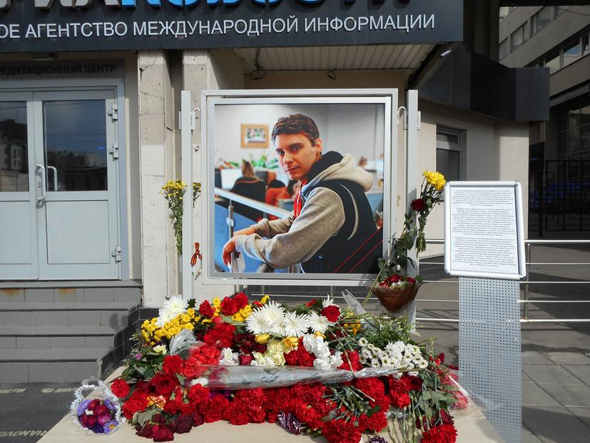
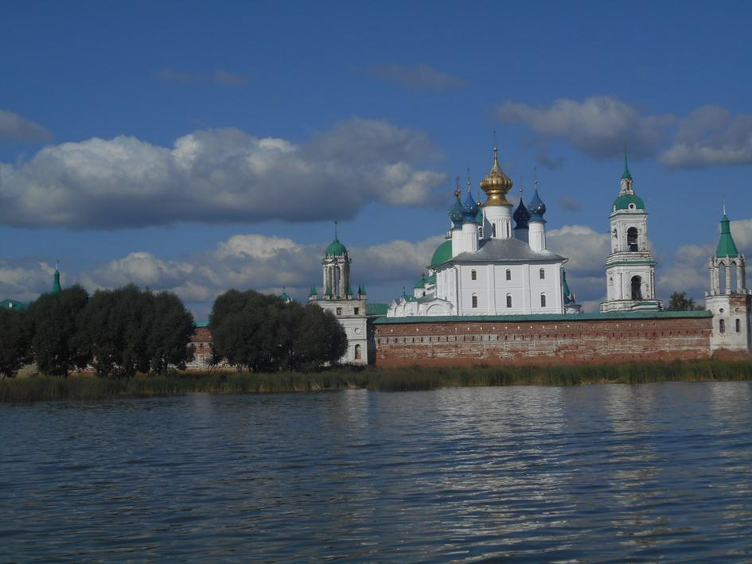
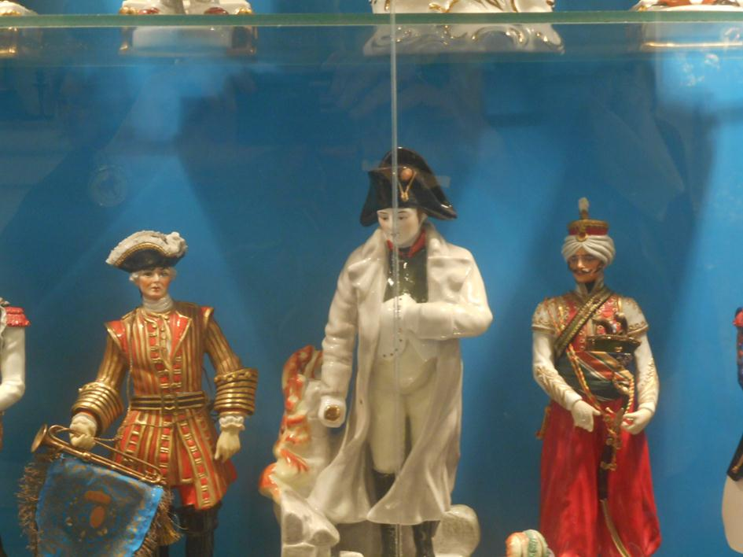
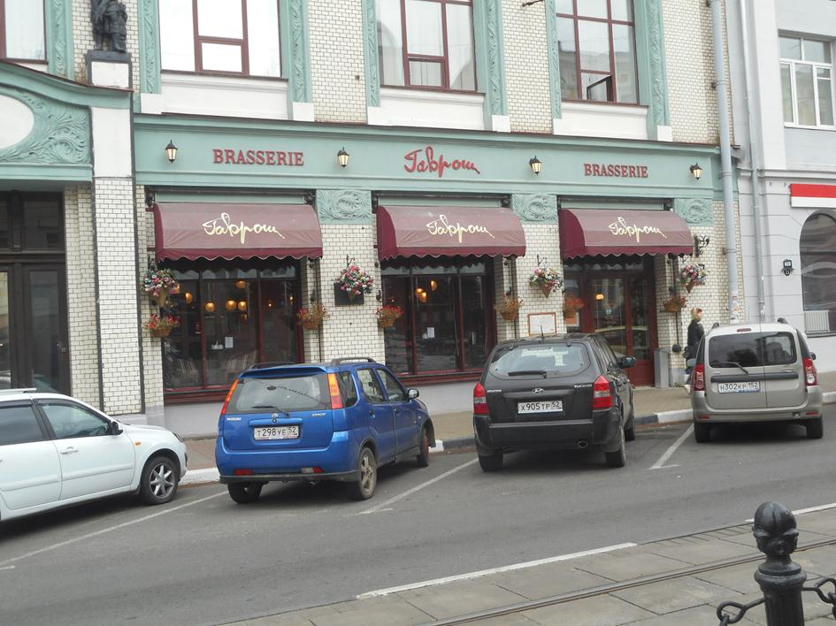

 Centre de Moscou, agence de presse RIA Novosti : hommage à Andreï Stenine, reporter-photographe tué lors de sa mission dans le Donbass le 6 août 2014Je rentre de mon séjour en Russie.
J'y vais tous les ans.
Si je peux, deux fois par an. C'est une passion qui me tient depuis longtemps. Plus ici, en France, le délire antirusse se déploie, plus j'ai besoin d'aller rencontrer mes amis, là-bas. Voir de mes propres yeux, discuter, partager un moment leur vie que je connais bien et qui me convient.
Là, mon projet était de rendre visite à mes amis en province aussi.
J'ai enseigné le russe au Lycée Français de Moscou, je peux être invitée facilement, je ne m'en prive pas.
Donc, je rentre de mon périple, 18 jours, Moscou, Nijni Novgorog, Yaroslavl, Moscou.
Dans ces deux villes de province il y a des personnes avec qui j'ai travaillé, qui sont devenues des amis. Je connais leur vie, leur famille. Ils connaissent la mienne. Des amis.
J'étais particulièrement curieuse cette fois, car, les tensions entre la Russie et l'Europe sont grandes. La politique et la diplomatie ont fait place à l’affrontement. Certes, un affrontement relativement « doux » si l'on pense à l'Ukraine et au Donbass, mais tout de même. Quel est l'effet des sanctions occidentales et de l'embargo décidé par la Russie en réponse ? Est-ce que les gens sont inquiets ? Leur vie matérielle s'est-elle dégradée ? Et leur moral ? En France, où nous avons élu un président de gauche qui fait une toute autre politique que celle pour laquelle il a été élu, le moral est bas. La crise économique et sociale, qui dure maintenant depuis plus de 10 ans, pèse et la crainte obscurcit les perspectives.  Lac Néro à Rostov VélikiiBeaucoup de citoyens ne prennent plus part aux élections. Ceux qui le font accordent à 25% leurs voix à l'extrême droite.
Dans toutes mes rencontres, j'ai pu constater plusieurs choses concordantes : les magasins sont pleins. La nourriture abonde. Certes, il n'y a pas de fromages français, mais, comme m'ont fait remarqué mes amis, il n'y en avait pas avant non plus.
Seules certaines villes, Moscou surtout, et certains milieux sociaux le ressentent.
La Biélorussie, non soumise aux sanctions et à l'embargo, est devenue grand pourvoyeur de nombreux produits et, du coup, l'objet de bien des boutades ! « Ananas de Biélorussie, crevettes de Biélorussie etc etc » et, comme souvent dans la mentalité russe, on s'en amuse, dérision et… autodérision. Ainsi, j'ai mangé de la mozarella d'Argentine et du parmesan de Tunisie. Les laiteries russes sont mises à contribution pour produire des fromages de qualité, semblables à ceux qui étaient importés. Bref, la France, ce sont ses fromages et… ses Mistral. Ces deux porte hélicoptères que la Russie a commandés et que la France a construits ne seront finalement pas livrés.... pour cause de conflit ukrainien... Là, de la part de mes amis, c'est l'incompréhension. Ce qui choque, c'est le manque d'indépendance politique de la France « officielle » qui a adopté sur la guerre en Ukraine les positions américaines quant à « l'agression de la Russie et « l'annexion de la Crimée ».
 Musée de la porcelaine à YaroslavlMes amis, que je n'avais pas vus depuis un an ne constatent pas de dégradation de leur vie matérielle. Les prix continuent d'augmenter, mais cela avait commencé avant les sanctions. Ils travaillent beaucoup, pour arriver à un niveau de vie décent, les salaires sont peu élevés dans l'ensemble. Mais tous pensent que ce serait « un péché de se plaindre « car la vie s'est énormément améliorée depuis 10-15 ans ! ».
Alors, oui, ils sont mécontents de la médecine publique peu efficace, encombrée, longue attente, et de la cherté de la médecine privée, à laquelle ils ont cependant recours quand ils veulent des résultats dans des situations personnelles difficiles. Ils ne sont pas contents de certaines réformes du système éducatif, bureaucratiques et sans autre intérêt que d'alourdir inefficacement la charge des enseignants. Critique de la bureaucratie.
La corruption, semble-t-il ne faiblit pas. Et le système « D » comme débrouille semble toujours très actif.
Finalement, le « libéralisme » fait ici les mêmes dégâts que chez nous, ai-je constaté. Sauf que ce pays sort d'un grand choc qu'a constitué la chute de l'ancien système… Et du coup, les difficultés économiques et sociales actuelles ou à venir ne sont pas vécues de la même façon. Ils sont « aguerris ». Mais, j'espère pour eux que les choses vont se stabiliser et que la crise économique qui semble devoir se profiler sera limitée.
 Restaurant Gavroche à Nijni NovgorogChez nous, en France, ça dégringole à toute vitesse. Tout semble fait pour détruite minutieusement tous nos atouts.
Et puis, partout, à Yaroslavl, Nijni, Moscou vient le choc de la situation en Ukraine. Beaucoup de familles sont mêlées, père ou grand-père ukrainien, mère ou grand-mère russe, ou l'inverse. Partout on me parle spontanément du Donbass. Les enfants du Donbass, arrivés dans ces villes dans un état physique et psychologique effrayant. Et il y a ceux qui recueillent chez eux de la famille du Donbass. Tous, ou presque, pestent contre les américains, jugés responsables du chaos ukrainien.
Comme je le pense aussi, (nous sommes un certain nombre à penser cela en France et en Europe, même si nous ne sommes pas les plus nombreux), je donne l'éclairage, vu de chez nous.
Voilà, je suis rentrée. J'ai de quoi écrire sur mon blog pendant un mois, au moins. Le 14 Octobre, je vais raconter mon séjour dans un petit café près de chez moi. Des amis viennent, des gens qui cherchent une autre information que la désinformation que nous servent les télés-aux-ordres.
Je vais suivre l'actualité, fournie, comme toujours, publier sur le blog et préparer mon prochain séjour.
Partager cette page